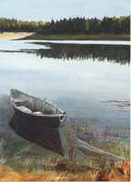

|
 Boating Boating
There are many ways to get out on boats at the Cape, even if you
don't bring your own. Some of my favorite ways include: 
- Rent a boat for a few hours
- Take a guided canoe trip
- Take an educational cruise on a larger
boat
- Take a tour on a commercial boat.
Cape Cod WaterWeb
has a wealth of information about boats, boatyards and rentals,
fishing, water sports, and everything you can imagine related to
the water. Cape Cod Outdoors
emphasizes fishing and water sports.
Various boat cruises, tours, and canoe trips are offered by the
National Seashore, Wellfleet
Wildlife Sanctuary and Cape Cod
Museum of Natural History. Additional boating resources include:
- Jack's Boat Rentals rents small boats at Gull Pond
in Wellfleet (349-7553) and Nickerson State Park in Brewster
(896-8556).
- Cape Water Sports (432-5996) rents boats at the Wequassett
Inn on Pleasant Bay (432-5400 X530) and at Ridgevale Beach in
Chatham (432-439).
- Arey's
Pond Boatyard gives sailing lessons in Little Pleasant Bay.
- Water Safaris is located at the Bass River Bridge,
Rte 28 in West Dennis, 362-5555 offers a cruise of the Bass
River in Dennis. It was so enjoyable that I include it here,
although it is outside my usual Cape territory.
- Boating resources that look interesting, but outside my experience:
- Wellfleet Marine, Town Pier, 349-2233 for boat rentals
- Flyers Marine
in Provincetown for boat rentals
- Schooner Bay Lady
for a sail around Provincetown Harbor
|